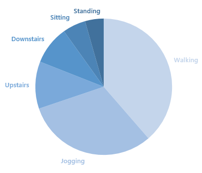
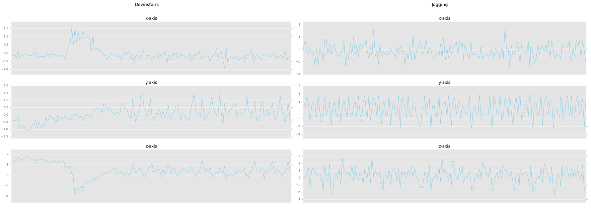
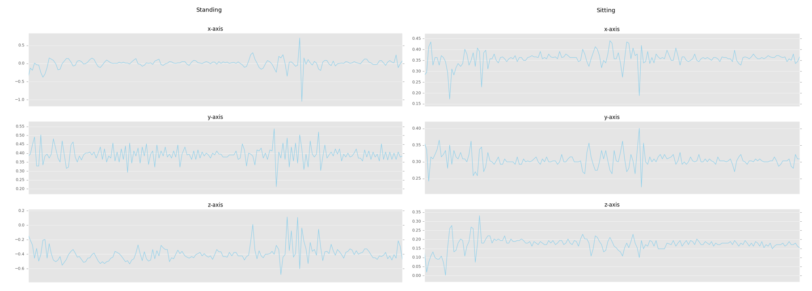
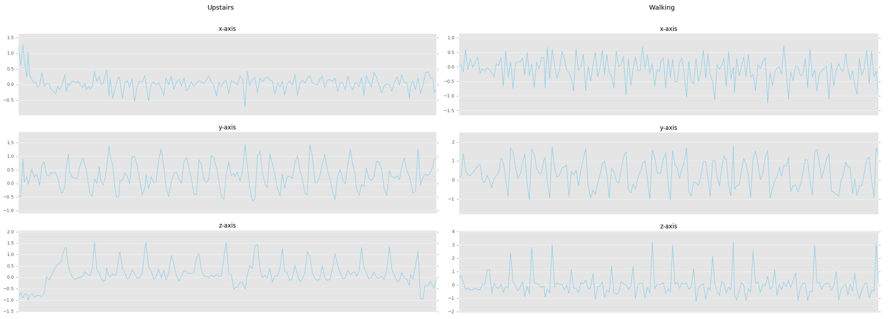
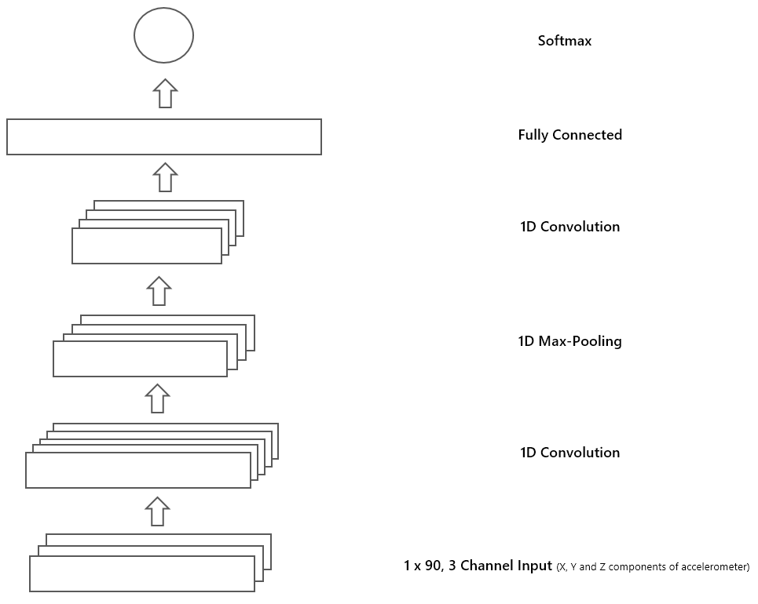

In the recent years, we have seen rapid increase in smartphones usage which are equipped with sophisticated sensors such as accelerometer and gyroscope etc. These devices provide the opportunity for continuous collection and monitoring of data for various purposes. One such application is human activity recognition (HAR) using data collected from smartphone’s accelerometer. There are several techniques proposed in the literature for HAR using machine learning (see [1]) The performance (accuracy) of such methods largely depends on good feature extraction methods. Hand-crafting features in a specific application area requires very good domain knowledge. Neural networks especially deep learning methods are applied successfully to solve very difficult problems such as object recognition, machine translation, audio generation etc. In literature, similar work has also been done for HAR using deep learning techniques (see [2]).
In this post, we will see how to employ Convolutional Neural Network (CNN) for HAR, that will learn complex features automatically from the raw accelerometer signal to differentiate between different activities of daily life.
We will use Actitracker data set released by Wireless Sensor Data Mining (WISDM) lab. This dataset contains six daily activities collected in a controlled laboratory environment. The activities include jogging, walking, ascending stairs, descending stairs, sitting and standing. The data is collected from 36 users using a smartphone in their pocket with 20Hz sampling rate (20 values per second). The dataset distribution with respect to activities (class labels) are shown in figure below.

Let’s get started by loading required libraries and defining some helper functions for reading, normalizing and plotting dataset.
import pandas as pd
import numpy as np
import matplotlib.pyplot as plt
from scipy import stats
import tensorflow as tf
%matplotlib inline
plt.style.use('ggplot')
def read_data(file_path):
column_names = ['user-id','activity','timestamp', 'x-axis', 'y-axis', 'z-axis']
data = pd.read_csv(file_path,header = None, names = column_names)
return data
def feature_normalize(dataset):
mu = np.mean(dataset,axis = 0)
sigma = np.std(dataset,axis = 0)
return (dataset - mu)/sigma
def plot_axis(ax, x, y, title):
ax.plot(x, y)
ax.set_title(title)
ax.xaxis.set_visible(False)
ax.set_ylim([min(y) - np.std(y), max(y) + np.std(y)])
ax.set_xlim([min(x), max(x)])
ax.grid(True)
def plot_activity(activity,data):
fig, (ax0, ax1, ax2) = plt.subplots(nrows = 3, figsize = (15, 10), sharex = True)
plot_axis(ax0, data['timestamp'], data['x-axis'], 'x-axis')
plot_axis(ax1, data['timestamp'], data['y-axis'], 'y-axis')
plot_axis(ax2, data['timestamp'], data['z-axis'], 'z-axis')
plt.subplots_adjust(hspace=0.2)
fig.suptitle(activity)
plt.subplots_adjust(top=0.90)
plt.show()First, read the data set using read_data function defined above which will return a Pandas data frame. After that, normalize each of the accelerometer component (i.e. x, y and x) using feature_normalize method.
dataset = read_data('actitracker_raw.txt')
dataset['x-axis'] = feature_normalize(dataset['x-axis'])
dataset['y-axis'] = feature_normalize(dataset['y-axis'])
dataset['z-axis'] = feature_normalize(dataset['z-axis'])Now we can visualize each component of accelerometer for different activities using plot_activity method. The code below will plot the 9 seconds signal for each human activity, which we can see in figures below. By visual inspection of the graphs we can identify differences in each axis of the signal across different activities.
for activity in np.unique(dataset["activity"]):
subset = dataset[dataset["activity"] == activity][:180]
plot_activity(activity,subset)


Now we have to prepare the dataset in a format required by the CNN model. For doing this we define some helper functions to create fixed sized segments from the raw signal. The windows function will generate indexes as specified by the size parameter by moving over the signal by fixed step size. The window size used is 90, which equals to 4.5 seconds of data and as we are moving each time by 45 points the step size is equal to 2.25 seconds. The label (activity) for each segment will be selected by the most frequent class label presented in that window. The segment_signal will generate fixed size segments and append each signal component along the third dimension, so that the input dimension will be (total segments, input width and input channel). We will reshape the generated segments to have height of 1 as we are going to perform one dimensional convolution (depth wise) over the signal. Moreover, labels will be one hot encoded using get_dummies function available in Pandas package.
def windows(data, size):
start = 0
while start < data.count():
yield start, start + size
start += (size / 2)
def segment_signal(data,window_size = 90):
segments = np.empty((0,window_size,3))
labels = np.empty((0))
for (start, end) in windows(data['timestamp'], window_size):
x = data["x-axis"][start:end]
y = data["y-axis"][start:end]
z = data["z-axis"][start:end]
if(len(dataset['timestamp'][start:end]) == window_size):
segments = np.vstack([segments,np.dstack([x,y,z])])
labels = np.append(labels,stats.mode(data["activity"][start:end])[0][0])
return segments, labelssegments, labels = segment_signal(dataset)
labels = np.asarray(pd.get_dummies(labels), dtype = np.int8)
reshaped_segments = segments.reshape(len(segments), 1,90, 3)Now we have our data set in the desired format, let’s divide it into training and testing set (70/30) randomly.
segments, labels = segment_signal(dataset)
labels = np.asarray(pd.get_dummies(labels), dtype = np.int8)
reshaped_segments = segments.reshape(len(segments), 1,90, 3)The figure below provides the CNN model architecture that we are going to implement using Tensorflow. If you comfortable with Keras or any other deep learning framework, feel free to use that. The model will consist of one convolution layer followed by max pooling and another convolution layer. After that the model will have fully connected layer which is connected to Softmax layer. Remember that the convolution and max-pool layers will be 1D or temporal.

First, let’s define some helper functions and configuration variable for our CNN model. The helper functions will be wrapper around Tensorflow functions to increase reuse and readability. The weight_variable and bias_variable will initialize Tensorflow variables for our model layers. The apply_depthwise_conv (see Depthwise Convolution) will perform 1D convolution on each input channel separately and pass the output through ReLU activation function. Likewise, apply_max_pool will perform 1D max pooling on the output of convolution layer.
input_height = 1
input_width = 90
num_labels = 6
num_channels = 3
batch_size = 10
kernel_size = 60
depth = 60
num_hidden = 1000
learning_rate = 0.0001
training_epochs = 5
total_batchs = reshaped_segments.shape[0] // batch_size
def weight_variable(shape):
initial = tf.truncated_normal(shape, stddev = 0.1)
return tf.Variable(initial)
def bias_variable(shape):
initial = tf.constant(0.0, shape = shape)
return tf.Variable(initial)
def depthwise_conv2d(x, W):
return tf.nn.depthwise_conv2d(x,W, [1, 1, 1, 1], padding='VALID')
def apply_depthwise_conv(x,kernel_size,num_channels,depth):
weights = weight_variable([1, kernel_size, num_channels, depth])
biases = bias_variable([depth * num_channels])
return tf.nn.relu(tf.add(depthwise_conv2d(x, weights),biases))
def apply_max_pool(x,kernel_size,stride_size):
return tf.nn.max_pool(x, ksize=[1, 1, kernel_size, 1],
strides=[1, 1, stride_size, 1], padding='VALID')Tensorflow placeholders for input and output data are defined next. The first convolution layer has a filter size and depth of 60 (number of channels, we will get as output from convolution layer). The pooling layer’s filter size is set to 20 and with stride of 2. Next, the convolution layer takes input of max-pooling layer apply filter of size 6 and will have tenth of depth as of max-pooling layer. After that the output is flattened out for the fully connected layer input. There are 1000 neurons in the fully connected layer as defined by the above configuration. The tanh function is used as non-linearity in this layer. Lastly, the Softmax layer is defined to output probabilities of the class labels.
X = tf.placeholder(tf.float32, shape=[None,input_height,input_width,num_channels])
Y = tf.placeholder(tf.float32, shape=[None,num_labels])
c = apply_depthwise_conv(X,kernel_size,num_channels,depth)
p = apply_max_pool(c,20,2)
c = apply_depthwise_conv(p,6,depth*num_channels,depth//10)
shape = c.get_shape().as_list()
c_flat = tf.reshape(c, [-1, shape[1] * shape[2] * shape[3]])
f_weights_l1 = weight_variable([shape[1] * shape[2] * depth * num_channels * (depth//10), num_hidden])
f_biases_l1 = bias_variable([num_hidden])
f = tf.nn.tanh(tf.add(tf.matmul(c_flat, f_weights_l1),f_biases_l1))
out_weights = weight_variable([num_hidden, num_labels])
out_biases = bias_variable([num_labels])
y_ = tf.nn.softmax(tf.matmul(f, out_weights) + out_biases)
The negative log-likelihood cost function will be minimized using stochastic gradient descent optimizer, the code provided below initialize cost function and optimizer. It also defines the code for accuracy calculation of the prediction by model.
loss = -tf.reduce_sum(Y * tf.log(y_))
optimizer = tf.train.GradientDescentOptimizer(learning_rate = learning_rate).minimize(loss)
correct_prediction = tf.equal(tf.argmax(y_,1), tf.argmax(Y,1))
accuracy = tf.reduce_mean(tf.cast(correct_prediction, tf.float32))We have all the required pieces for CNN. Next, let’s write code for training the model. The code provided below, will train the CNN model using a batch size of 10 for 5 training epochs. At each epoch, we will print out the model’s loss and accuracy on the training set. At the end of training, the model will classify the testing set instances and will print out achieved accuracy.
cost_history = np.empty(shape=[1],dtype=float)
with tf.Session() as session:
tf.initialize_all_variables().run()
for epoch in range(training_epochs):
for b in range(total_batchs):
offset = (b * batch_size) % (train_y.shape[0] - batch_size)
batch_x = train_x[offset:(offset + batch_size), :, :, :]
batch_y = train_y[offset:(offset + batch_size), :]
_, c = session.run([optimizer, loss],feed_dict={X: batch_x, Y : batch_y})
cost_history = np.append(cost_history,c)
print "Epoch: ",epoch," Training Loss: ",c," Training Accuracy: ",
session.run(accuracy, feed_dict={X: train_x, Y: train_y})
print "Testing Accuracy:", session.run(accuracy, feed_dict={X: test_x, Y: test_y})In this blog post, we saw how to process accelerometer data set for CNN input, visualize it and train a deep network to classify 6 daily life activities using Actitracker dataset. If you have any question or feedback, please comment below.
The python notebook is available at the following link.